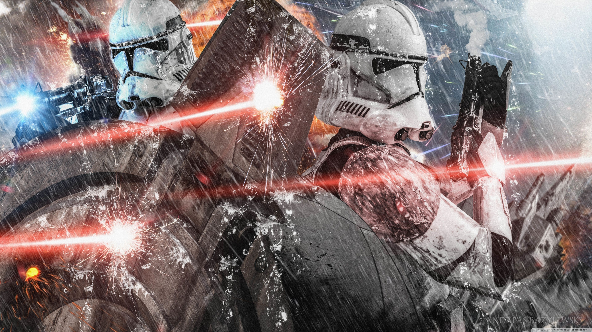
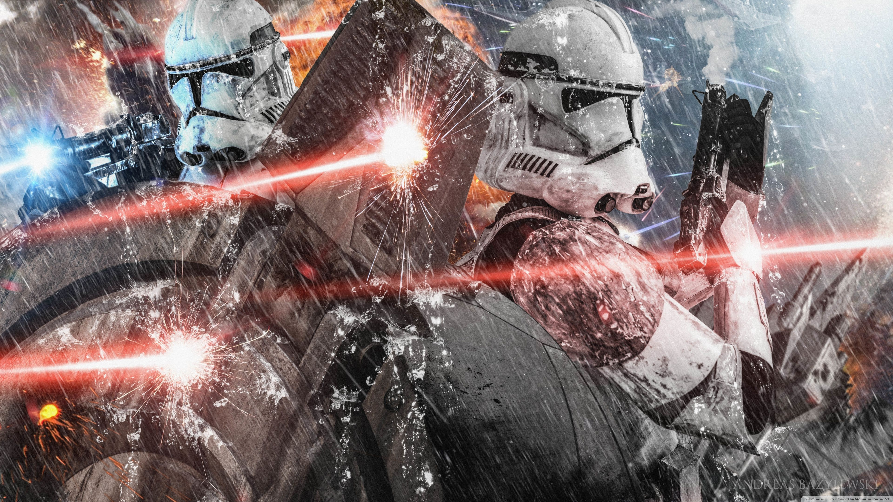

A Aliança pela Restauração da República, comumente conhecida como Aliança Rebelde, Aliança ou Rebelião, foi um movimento de resistência formado por Bail Organa e Mon Mothma para opor a ordem do Império Galáctico. Se formou a partir de uma série de células rebeldes, incluindo a tripulação do Fantasma e a célula rebelde Fênix. A Aliança nasceu dos restos da Ordem Jedi com o apoio dos membros renegados do Senado Imperial tais como Bail Organa e, mais tarde, sua filha, Leia. Fundado e unido por Organa, os rebeldes contaram com a ajuda de diversos Jedi sobreviventes, como Ahsoka Tano, Kanan Jarrus, seu Padawan, Ezra Bridger e, posteriormente, Luke Skywalker, de cidadãos do Império e dos desertores da Força armadas Imperiais, como Bodhi Rook, Jan Dodonna, Ryder Azadi e Wedge Antilles, assim como veteranos das Guerras Clônicas como o Capitão Rex. Ao invés de travar uma guerra total, a Aliança travou uma guerra de atrito contra o governo, estabelecendo bases pequenas em toda a galáxia em vez de controlar um planeta inteiro. Quando a Aliança roubou com sucesso os planos para a arma suprema do Império, a Estrela da Morte, e destruiu a estação espacial na Batalha de Yavin com a ajuda de Luke Skywalker, a maré da guerra começou a mudar e a ameaça rebelde começou a provar uma espinho severo do lado do Império, e continuou a se envolver em batalhas com o Império. No entanto, sob o comando de Darth Vader, as forças imperiais conseguiram derrotar a Aliança em Hoth, forçando a Aliança a espalhar suas forças para sobreviver. Eventualmente, a Aliança prevaleceu contra o Império e o danificou criticamente quando lançaram um ataque contra a segunda Estrela da Morte durante sua construção no que se tornaria a Batalha de Endor. Não só a Aliança conseguiu destruir a super arma, mas a Marinha Imperial foi severamente enfraquecida com a perda de um dos Super Destróier Estelar e Luke Skywalker conseguiu redimir seu pai, Darth Vader, que matou o Imperador Sheev Palpatine antes de morrer ele mesmo na batalha. Após a queda dos maiores líderes do Império, a Aliança Rebelde manteve se avanço contra as forças divididas e enfraquecidas do Império, logo sendo reorganizada como a Nova República, que mais tarde derrotaria o Império na Batalha de Jakku e forçaria o Império a render-se assinando a Concordância Galáctica, efetivamente encerrando a guerra. Na altura da Batalha de Yavin, a Aliança Rebelde escolheu uma fênix vermelha como símbolo e logotipo.
O Império Galáctico, também conhecido como a Nova Ordem, o Primeiro Império Galáctico ou simplesmente o Império, era o governo que subiu ao poder ao fim das Guerras Clônicas, substituindo a República Galáctica. A autoridade central residia em Darth Sidious, publicamente conhecido como o Imperador Galáctico Palpatine, que também era o Lorde Negro dos Sith. Por quase duas décadas, o corpo legislativo foi o Senado Imperial, mas ele foi dissolvido pelo Imperador poucos dias antes da Batalha de Yavin. Durante o reino do Império, inúmeros sistemas estelares foram conquistados e atos dissidentes foram brutalmente esmagados pelo Exército e Marinha Imperiais em rápida expansão. O Império também supervisou a quase exterminação dos Jedi, com a destruição do Templo Jedi em Coruscant e sua transformação no recém-reformado Palácio Imperial. A República Galáctica, vulgarmente designada simplesmente como a República, e mais tarde também conhecida como a Velha República, foi uma união democrática que governava a galáxia por mil anos antes da ascensão do Império Galáctico. A República foi ajudada pelos esforços da Ordem Jedi, que permaneceram como os guardiões da paz e da justiça, que permite à República de ser livre de conflito em grande escala por mais de mil anos. No entanto, trinta e dois anos antes da Batalha de Yavin, a República Galáctica sofreu sua primeira grande crise em milênios durante a Invasão de Naboo, que levou-a para as Guerras Clônicas dez anos depois. Durante este conflito em toda a galáxia, a República sofreu um rearmamento militar maciço através do apoio de Senadores do Senado Galáctico, que foram conduzidos pelo democraticamente eleito Supremo Chanceler, Sheev Palpatine. Sem o conhecimento de todos mas de um grupo secreto, Palpatine era, na realidade, o Lorde Negro dos Sith, e tinha projetado a crise para nomear a si mesmo como Imperador Galáctico, efetivamente fazendo isso em 19 ABY. Após o Jedi descobrirem sua verdadeira natureza, Palpatine anunciou a Ordem 66, um protocolo projetado para os soldados clone do recém-formado Grande Exército da República para que os mesmos se voltassem contra seus Generais Jedi, efetivamente decimando a Ordem Jedi em um instante, tudo enquanto Palpatine anunciava a criação do primeiro Império Galáctico.